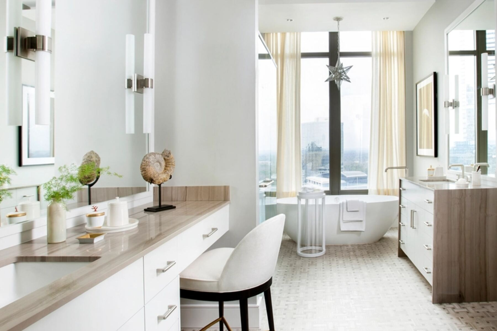

Zgłoszenia z tej okolicy mamy niemal codziennie. Bemowo to bloki z wielkiej płyty sąsiadujące z nowszymi inwestycjami. Dojeżdżamy pod wskazany adres, naprawiamy na miejscu i nie trzeba nigdzie znosić ciężkiego sprzętu.

Pralki
Większość napraw udaje się zamknąć za pierwszym razem, bo serwisant ma ze sobą zapas najczęściej wymienianych podzespołów. Diagnozę wykonujemy u Państwa w domu, a cenę naprawy podajemy przed jej rozpoczęciem. Koszt wstępnej diagnozy i wyceny od 49 zł w przypadku rezygnacji z naprawy.
Dojazd w granicach miasta ustalamy zwykle na konkretną porę, a nie na „gdzieś w ciągu dnia”. Na wszystkie wymienione części dajemy 12 miesięcy na wymienione części. Naprawiamy również starsze modele, których część serwisów już nie przyjmuje.
Jeżeli po diagnozie okaże się, że naprawa przestaje się opłacać — bo koszt części przewyższa wartość sprzętu — powiemy o tym wprost, zamiast namawiać Państwa na wymianę podzespołu za podzespołem.
Zmywarki
Zmywarki naprawiamy na tych samych zasadach co pralki: dojazd pod wskazany adres, diagnoza na miejscu, wycena przed rozpoczęciem pracy i 12 miesięcy na wymienione części.
Sprzęt w zabudowie wyjmujemy z szafki i wstawiamy z powrotem — to część usługi, a nie dodatkowo płatna czynność.
Przy zgłoszeniu pomaga podanie marki, modelu i kodu błędu z wyświetlacza, jeśli się pojawia.
Najczęstsze zgłoszenia
Osiem objawów, które słyszymy najczęściej — i to, co zwykle za nimi stoi.
Zwykle łożyska bębna albo ciało obce między bębnem a zbiornikiem.
Uszczelka drzwi, wąż odpływowy albo pęknięty zbiornik.
Przepalona grzałka lub uszkodzony czujnik temperatury.
Zwarcie w grzałce albo silniku — nie należy jej wtedy używać.
Grzałka, dmuchawa lub brak płynu nabłyszczającego.
Uszczelka drzwi albo nieszczelne połączenie węża.
Najczęściej czujnik zalania albo moduł sterujący.
Kod błędu wskazuje podzespół i skraca diagnozę.
Dlaczego my
Przez 56 lat nauczyliśmy się, że w tej pracy liczą się proste rzeczy: przyjechać, powiedzieć prawdę o koszcie i naprawić tak, żeby nie trzeba było wracać.
Nie trzeba znosić pralki po schodach ani organizować transportu. Serwisant przyjeżdża z narzędziami i częściami.
Serwisant ustala usterkę, podaje koszt i dopiero wtedy pyta o zgodę. Żadnych dopłat, o których dowiadują się Państwo na końcu.
Firma jest rodzinna i serwisanci pracują w niej długo. To nie jest pośrednik, który zleca naprawę przypadkowej osobie.
Do najczęstszych usterek wozimy części ze sobą, więc druga wizyta zdarza się rzadko.
Pralki i zmywarki sprzed lat, których część serwisów już nie przyjmuje. Przez pół wieku widzieliśmy prawie wszystko.
Na wymienione części dajemy rok gwarancji. Jeśli usterka wróci, przyjeżdżamy ponownie.
Opinie
Opinie zebrane od klientów serwisu.
Co tu dużo pisać. Zadzwoniłem, dość szybko przyjechali i jeszcze tego samego dnia żona nastawiła pranie.
Naprawa wymagała wymiany części oraz wyregulowania drzwiczek. Pan przyjechał w tym samym dniu z częścią i zamontował. Cena atrakcyjna i całkowity koszt OK.
Chyba pierwszy raz mi się tak udało, że po telefonie pan przyjechał w ciągu godzinki. Powiedział, co się zepsuło i potem szybciutko naprawił.
Serwisowane marki
Części do najczęściej spotykanych modeli wozimy w aucie serwisowym, więc bardzo często naprawa kończy się podczas pierwszej wizyty.
W pobliżu
Pytania i odpowiedzi
Zgłoszenia przyjmujemy całą dobę. Termin dojazdu ustalamy od razu przy telefonie.
Wystarczy imię i numer. Oddzwaniamy zwykle w ciągu godziny. Jeśli wolą Państwo od razu porozmawiać — 22 666 55 22.